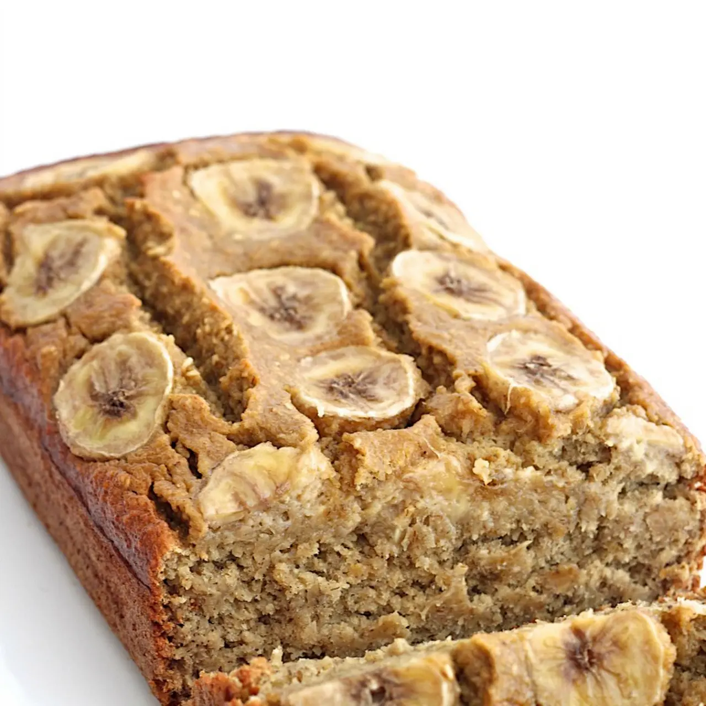
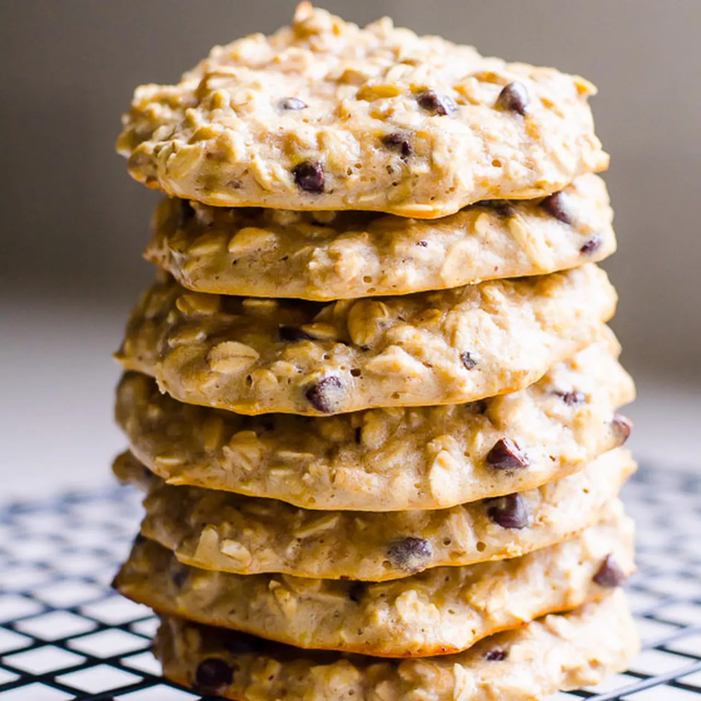

Meilleure Soupe au Brocoli et Fromage
Soupe crémeuse au brocoli et fromage,
réconfortante et facile à faire,
idéale pour une soirée froide.
Soupe Marocaine aux Lentilles Rouges
Soupe réconfortante et épicée,
parfaite pour réchauffer les soirées
avec des saveurs marocaines authentiques.

Salade César
Salade classique avec romaine croquante,
parmesan et une vinaigrette maison
riche en saveurs.
Brochette de Poulet Turc (Tavuk Shish)
Brochette de poulet mariné aux épices,
grillée et servie avec une touche
de citron pour une saveur intense.

Carrot Cake – Healthy Make Ahead Breakfast Cookies
Cookies sains au goût de carrot cake,
parfaits pour un petit-déjeuner
à l'avance.

Banana Bread Santé sans Farine (5 Ingrédients)
Banana bread simple et sain,
préparé sans farine, idéal pour le
petit-déjeuner ou le goûter.
Pain Perdu Fourré aux Fruits
Un délicieux bol de petit-déjeuner
avec des fruits frais et une touche
sucrée pour bien commencer la journée.

Biscuits Protéinés
Des biscuits sains et riches en protéines,
parfaits pour une collation énergisante
à tout moment de la journée.